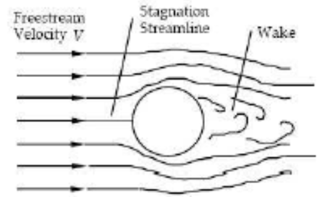

Hi. I'm Opprah Manyika.
Aerospace engineer working at the intersection of computational fluid dynamics, fluid-structure interaction, transient heat transfer, and conceptual aircraft design. Toolchain: MATLAB, GNU Octave, ANSYS Fluent, ANSYS Mechanical, SolidWorks, Git.
This site is a single-page engineering portfolio. Six university projects, the MATLAB solvers, the ANSYS post-processing, the wind-tunnel data, the hand-written PDE schemes, and the full academic reports as PDFs are all in the linked repositories.